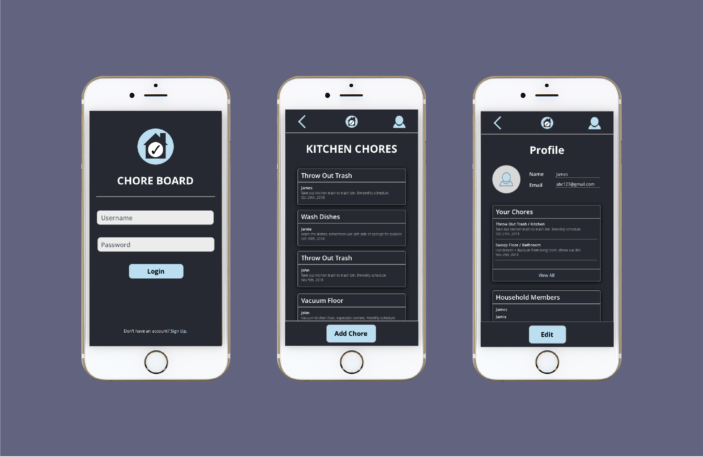
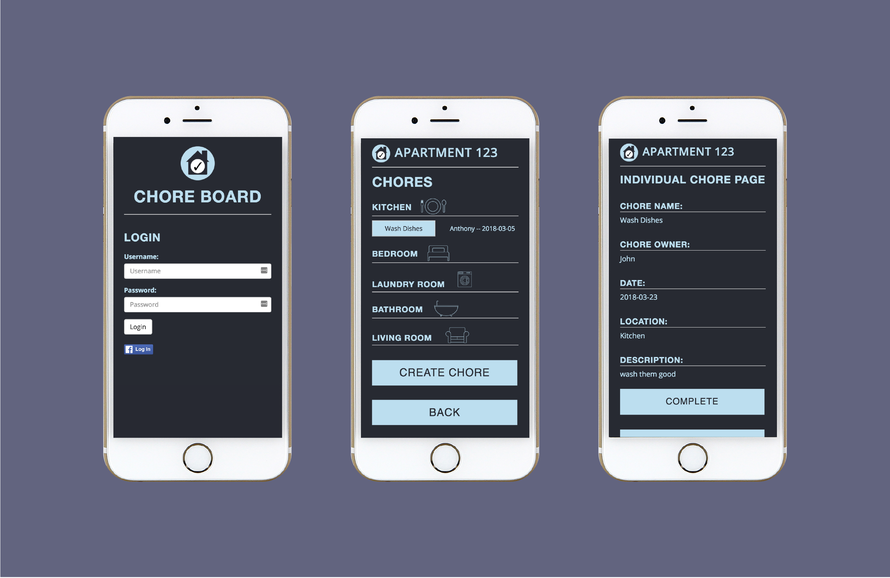
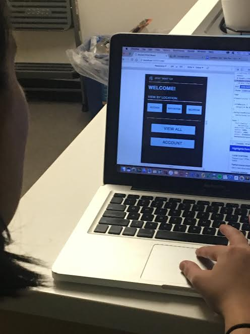
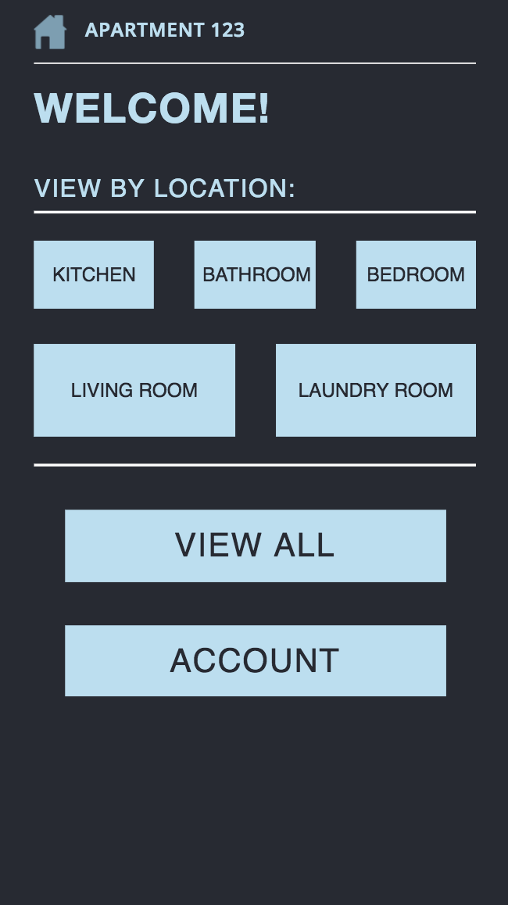
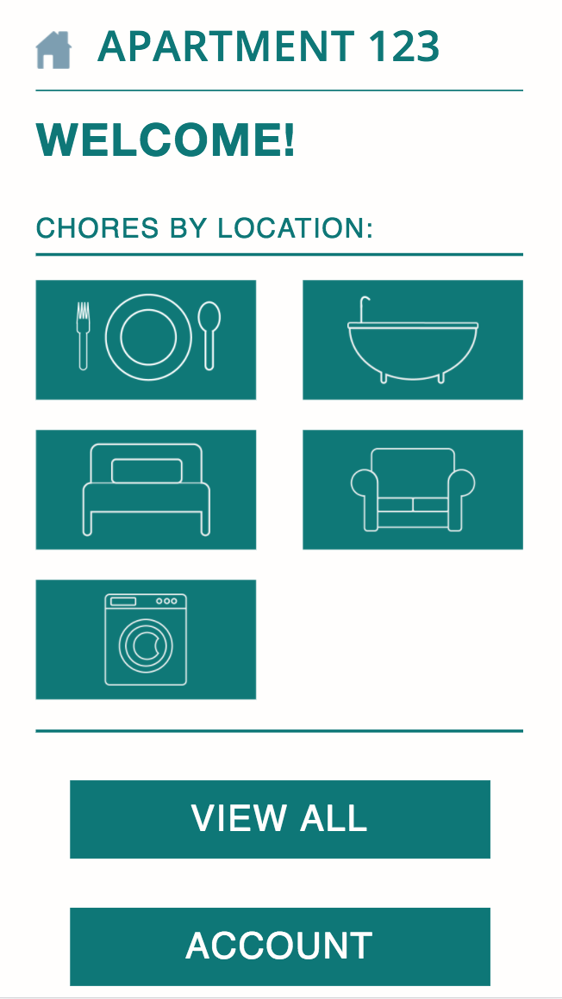

Chore Board
A mobile web app to help track shared responsibilites between those who live together.
My Role
Usability Researcher
UX Designer
Web Developer
Context
10 Weeks
Jan 2018 - Mar 2018
Team of 3
Tools Used
Sketch
InVision
A/B Testing
HTML, CSS, & JS
The Problem & Opportunity
Sharing a common space is a practice of communication and compromise. Constant communication and coordination is necessary to reduce conflict.
How might we create an app that allows multiple people in a household to create and view chores and tasks that need to be done at a single destination.
User Interviews
We interviewed 10 people from different stakeholder groups and found four unifying themes.
1. Communication
A lack of communication was what makes living with other people difficult.
"When I see that something needs to be done, I just do it myself because its easier than asking someone else to do it."
2. Forgetfulness
Even when an agreement was in place, it is often forgotten about.
"I usually forget that it's my turn to throw out the trash. I don't do it on purpose; I just have other things to do or I just dont remember to do it!"
3. Mindfulness
People are busy and just might not realize that it was their turn to do a chore.
"Honestly, sometimes I just don't realize that it bothers my roommate and because it doesn't bother me."
4. Confrontation
Confrontation is difficult, and burying problems can lead to bigger issues.
"I usually don't bring things up because I don't want to bother [my roommate] and hurt their feelings or something."
Paper Prototyping
We asked stakeholders to step through the drawn paper screens, as if they were using the app to coordinate with their roommates.

We found that people were interested in a system meant for coordinating house chores. They had all had experience with roommate conflicts and chores getting put off.
Web Development & High-Fidelity Prototyping
Because I had the most experience with HTML, CSS, and JS, I took on the lead developer role. I created and implemented high-fidelity pages. I also tutored a teammember in the coding languages.
Usability Testing & A/B Testing
We tested the high-fidelity prototypes with 5 people. Results showed that there was a high learning curve for using the app. Most participants didn't understand what they could click and/or what a click would lead to. There were points that required guesswork, and future design iterations needed to eliminate these problems.
User Testing
Version A: Text-based
Version B: Image-based
27 individuals from our stakeholder groups were A/B tested. 15 for version A, and 12 for version B. At 86.67%, Version B had a 3.85% higher conversion rate than version A. We decided to proceed with version A.
Because I had more time... A redesign!
The redesign got rid of the visual inconsistencies that were present in the first version and incoperated functions that I wasn't able to code last time.
Reflection
Time as a limiting constraint. Creating a fully functioning application takes much longer than creating static UI pages. A lot of functionalities we imagined had to be put aside in order to finish.
Designing a system that can account for several interaction methods is very complex. For example, this app can't really account for chores that are repeating. Flesh out the add/complete chore interaction. A user has to input all the information in order to submit it. But what if they need to have repeating chores? Or if they don't want to fill out all the information?